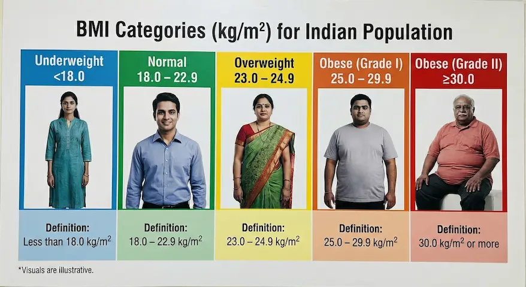
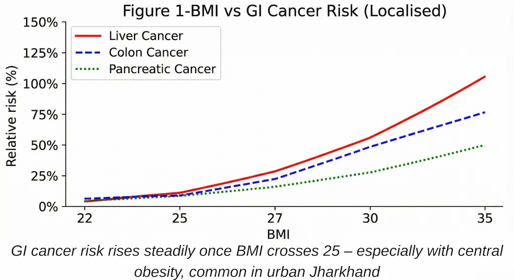
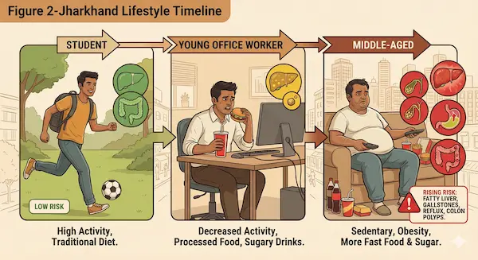
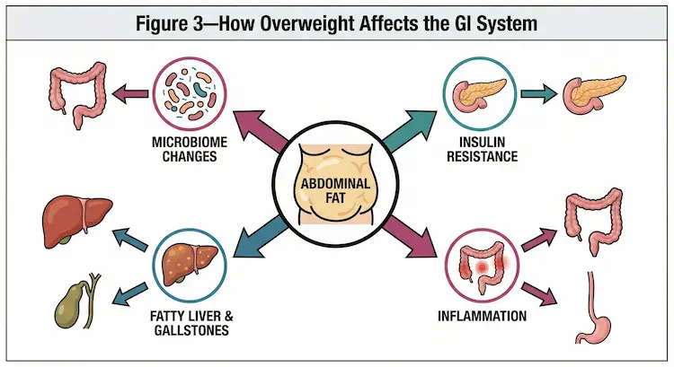
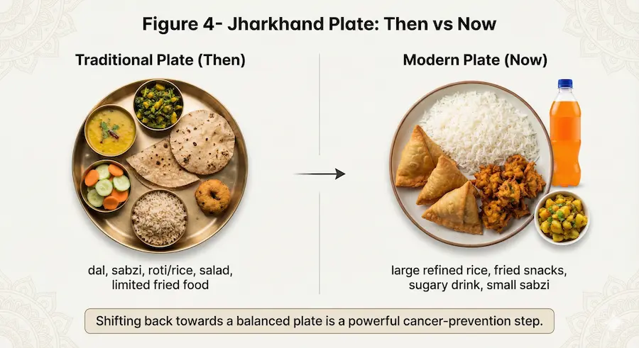
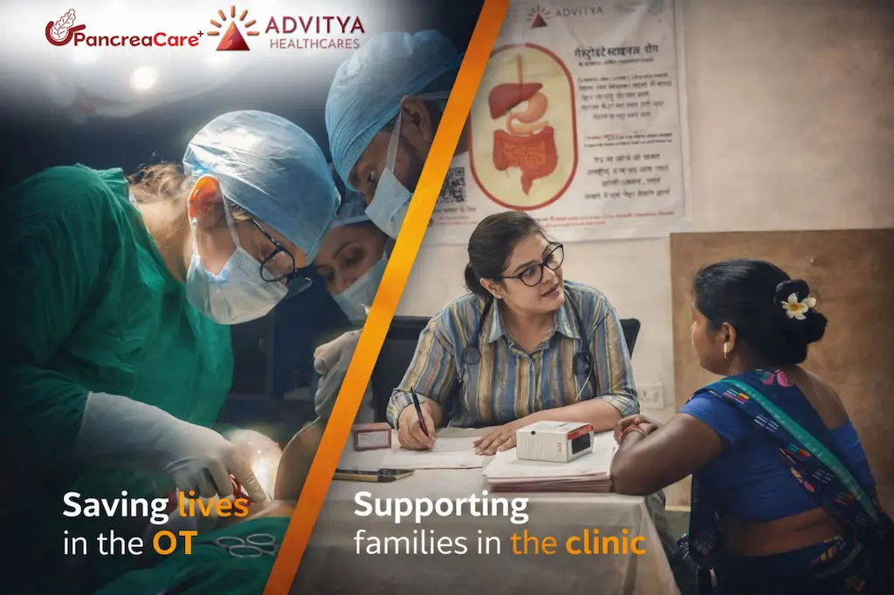

In Jharkhand – especially in growing urban pockets like Ranchi, Bokaro and nearby towns – lifestyle is changing fast.
For many people, a BMI above 25 kg/m² feels like “thoda sa mota ho gaya hoon, it’s okay.” But medically, a BMI ≥25 (overweight/obese) means higher risk of cancers of the food pipe, stomach, liver, gallbladder, pancreas and colon/rectum over the next 10–20 years.
At PancreaCare (by Advitya Healthcares) in Ranchi, we see both sides of this story:
- Patients who never knew their weight and diet were increasing their cancer risk
- And patients who ask, “If I reduce my weight now, can I still protect my gut?”
This blog explains, in simple language:
- What BMI ≥25 really means
- How overweight and diet together damage your GI system
- Which GI cancers are strongly linked to excess weight
- What people in Jharkhand / Ranchi / Bokaro can do to protect themselves
- How PancreaCare is working to bridge gaps in healthcare, building trust in GI and cancer care
1. BMI ≥25 : More Than Just a Number on Your Report
BMI (Body Mass Index) For Indian Population = weight (kg) ÷ height (m²)
- Underweight : <18.0 kg/m²
- Healthy : 18.0–22.9 kg/m²
- Overweight : 23.0–24.9 kg/m²
- Obese (Grade I) : 25.0-29.9 kg/m²
- Obese (Grade II) : ≥ 30 kg/m²

For many Indian and Jharkhandi bodies (shorter height, more central fat), risk can start even earlier, but your blog focus is BMI ≥25 – the point where the risk becomes clearly higher.
Think of BMI like blood pressure:
- Higher for one day is not good,
- But high for years is what really causes damage.
In the same way, spending years at BMI ≥25 loads your GI system with hormonal, inflammatory and metabolic stress that silently increases cancer risk.
2. How Extra Body Fat Damages Your Gut From Inside
Overweight/obesity is not just “stored fat”. Especially around the waist, fat acts like a hormone factory and a slow poison for the gut.
a) Insulin Resistance & Growth Signals
When we gain excess weight, especially from refined carbs and sugary foods (white rice in large amounts, sweets, cold drinks, biscuits, bakery items), our body becomes insulin resistant.
- The pancreas has to produce more insulin.
- High insulin and IGF-1 (insulin-like growth factor) tell cells to divide more and die less.
This constant “grow, grow, grow” message affects cells in the liver, pancreas, stomach, colon and rectum, making it easier for cancer to develop over time.
b) Silent Inflammation
Excess fat tissue releases inflammatory chemicals. This chronic low-grade inflammation:
- Damages DNA
- Changes the way cells communicate
- Helps pre-cancerous cells survive and grow
For the GI tract, this inflammation can affect the liver (fatty liver), intestines, pancreas and stomach.
c) Fatty Liver and Toxic Bile
Many people in Ranchi and Bokaro who come to clinics for “gas/acidity” or “weakness” actually have fatty liver on ultrasound.
- Over years, fatty liver (NAFLD) can progress to more serious disease and increase the risk of liver cancer.
- Extra weight also changes bile composition, leading to gallstones, which raise the risk of gallbladder cancer – a cancer more common in parts of North and Eastern India.
d) Gut Microbiome Disturbance
Diets high in fried snacks (kachori, samosa, pakoda, bhujia), processed meats, sugary drinks and low in fiber (sabzi, dal, fruits, salads, whole grains) disturb the gut bacteria balance.
The wrong kind of bacteria can:
- Produce more harmful metabolites
- Increase local inflammation in the colon
- Contribute to colorectal cancer
3. GI Cancers Linked to Overweight/Obesity
3.1 Esophagus & Stomach
In many city areas, spicy, oily food + late dinner + lying down soon after eating are now normal habits.
- Central obesity (big waist) increases pressure inside the abdomen → more acid reflux.
- Long-standing reflux can lead to changes in the lower food pipe and raise the risk of esophageal adenocarcinoma.
- High salt, smoked and pickled foods, combined with H. pylori infection, increase the risk of stomach cancer, and excess weight adds to that risk.
In simple words:
Big waist + reflux + poor diet = higher risk for food pipe and upper stomach cancers.
3.2 Liver & Gallbladder
For Jharkhand, this is a very important area.
- Overweight individuals often have fatty liver.
- If not controlled, this can progress to serious liver disease and liver cancer.
- Overweight also increases the chance of gallstones, which is a risk factor for gallbladder cancer – seen relatively more in Eastern India.
Add risk factors like alcohol intake, viral hepatitis, very oily food, and the danger multiplies.
3.3 Pancreas
The pancreas sits deep in the abdomen and is crucial for digestion and sugar control.
- Excess weight, especially around the belly, worsens insulin resistance and causes a constant high-insulin state.
- This environment promotes pancreatic cell changes and over years can contribute to pancreatic cancer.
Because symptoms of pancreatic cancer appear late, prevention through a healthy weight and better diet is extremely important.
3.4 Colon & Rectum
Colorectal cancer risk goes up clearly with:
- Higher BMI (especially above 25–27)
- Low fiber intake (little sabzi, salad, fruits, whole grains)
- High red and processed meat (sausages, processed kebabs, preserved meat)
- Alcohol and smoking
In Jharkhand, a plate that regularly has:
- A lot of refined rice or roti,
- Very little salad or fruit,
- Deep-fried sides,
- And low physical activity
creates a perfect environment for colorectal cancer over time.
4. Intensity and Duration: Why “How Much” and “How Long” Both Matter
Two questions decide your true risk :
1. Intensity – How high is your BMI?
- BMI 25–27: risk begins to increase
- BMI 30 and above: risk rises more sharply
2. Duration – How many years have you stayed above BMI 25?
- 1–2 years of slight overweight is concerning but still modifiable
- 10–20 years of being overweight/obese works like a chronic exposure, similar to how long-term smoking harms lungs
Someone who has been around BMI 27–30 from their 20s to 50s may carry a much higher GI cancer risk than someone who gained weight only recently.
Central obesity (large waist, “pot belly”) is especially dangerous, even if BMI is only slightly high.
5.What People in Jharkhand / Ranchi / Bokaro Can Do
You cannot change your genes, but you can change weight, diet and habits.
a) Aim for Healthy BMI and Waist
- Work with a doctor/dietitian to gradually reduce 5–10% of body weight over months.
- Track waist circumference, not just weight. Reducing belly fat is key.
b) Change the Pattern of Your Plate
Try to make at least half your plate:
- Vegetables and salads (cooked sabzi + raw salad)
- Dal/legumes (dal, chana, rajma, etc.)
- Choose whole grains when possible: mix some brown rice, millets, multi-grain atta.
- Cut down on:
- Daily fried snacks (samosa, kachori, chips)
- Sugary drinks (cola, packaged juices, energy drinks)
- Excess sweets (halwa, rasgulla, gulab jamun, everyday biscuits)
c) Move More, Sit Less
- At least 30–45 minutes of brisk walk or equivalent most days of the week.
- In offices in Ranchi/Bokaro, break long sitting with short walking breaks.
d) Avoid Tobacco and Limit Alcohol
- Tobacco (smoked or smokeless) and alcohol combine with obesity to multiply GI cancer risk.
- If you drink, keep it occasional and in very small amounts – or best, avoid.
e) Listen to Warning Signs
Consult a specialist if you have:
- Persistent acidity or reflux
- Difficulty swallowing, unexplained weight loss
- Long-standing change in bowel habits, blood in stool
- Persistent abdominal pain or jaundice
- Strong family history of GI cancers
Early check-up can save life.
6. How PancreaCare (by Advitya Healthcares) Helps
Advitya Healthcares is dedicated to “Bridging Gaps in Healthcare. Building Trust.”
PancreaCare (by Advitya Healthcares) is a centre of excellence for surgical, medical and cancer care of the pancreas, liver, gallbladder and luminal GI diseases, serving patients from Ranchi, Bokaro, Dhanbad, Jamshedpur and across Jharkhand.
At PancreaCare, we focus on:
- Early evaluation of high-risk individuals (overweight/obese with GI symptoms or family history)
- Advanced diagnostics for liver, pancreas, gallbladder and colorectal diseases
- Multidisciplinary treatment for GI and hepatobiliary cancers
- Lifestyle and diet counselling to reduce future risk
For many families in Jharkhand who earlier had to travel to metros for GI cancer care, our goal is to bring specialised, ethical, evidence-based care closer to home.
7. Suggested Figures & Diagrams
Figure 1 – BMI vs GI Cancer Risk (Localised)
- X-axis: BMI (22, 25, 27, 30, 35)
- Y-axis: Relative risk (%)
- Curves for: liver, colon, pancreatic cancer

Figure 2 – Jharkhand Lifestyle Timeline
Panel showing a typical person from student → young office worker → middle-aged with:

- Increasing weight
- Decreasing activity
- More fast food and sugary drinks
Figure 3 – How Overweight Affects the GI System
Central icon: abdominal fat

Arrows to:
- Insulin resistance
- Inflammation
- Fatty liver & gallstones
- Microbiome changes
Figure 4 – “Jharkhand Plate: Then vs Now”

- Left: Traditional plate – dal, sabzi, roti/rice, salad, limited fried food.
- Right: Modern plate – large refined rice, fried snacks, sugary drink, small sabzi.
“If you’re living with excess weight, acidity, fatty liver or unexplained gut symptoms, don’t wait for them to ‘settle on their own’. Early evaluation can save your life. Book your GI risk assessment at PancreaCare by Advitya Healthcares today and let us help you protect your liver, pancreas and gut – right here in Jharkhand

At PancreaCare by Advitya Healthcares, we recognize that being overweight can silently damage your liver, pancreas, and digestive system. Our approach goes beyond treatment—we offer a complete care pathway that combines medical expertise, lifestyle intervention, and compassionate support to manage obesity-related GI conditions and restore long-term digestive health.
Advitya Healthcares Pvt. Ltd.
Ranchi, Jharkhand, Bokaro & Kolkata
- +91 9211221551
- +91 9211221552
- +91 9211221553
- +91 9211221554
www.advityahealthcares.com | info@advityahealthcares.com
Have a question this article does not answer?
Send us your reports. A specialist reviews them before you travel, so the first visit begins with a plan rather than a repeat test.